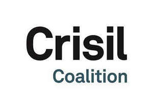

Trade Mark Journal No.2025/013 28 March 2025
UK00004138090 17 December 2024 (9,16,35,36,41,42)

- Class 9
- Software for general analytical purposes and for carrying out economic, industrial, and corporate research and risk assessment for financial institutions; downloadable computer software and mobile applications software for accessing online business and financial information, financial indices, financial and credit ratings, market research, market reports, data analytics, stock prices, equity research, investment funds, risk solutions, investment, directories featuring commodities market information, market data and pricing data; Computer software for accessing and manipulating data in a financial database, and creating customized financial models, charts, analyses, and reports based on a financial database; computer software that performs risk portfolio analytics and quantitative risk analyses.
- Class 16
- Printed matters; index cards [stationery]; indexes; paper and cardboard; bookbinding material; photographs; stationery; adhesives for stationery or household purposes; artists materials; paint brushes; office requisites (except furniture); instructional and teaching material (except apparatus); advertisement board of paper or cardboard; plastic materials for packaging; almanacs; announcement cards (stationery); banners of papers; booklets; calendars; catalogues; printed publications.
- Class 35
- Business management consultancy services; business data analysis; providing data benchmarking information and business intelligence services; business research and data analysis services in the field of data management; business consulting, advising businesses in strategic management and development of overall corporate strategy and business initiatives; corporate management consulting services to assist executives in business decision making; advising businesses through the use of business consulting tools and techniques that enable strategic business decision making; providing business project management consulting services, in particular, predicting project outcomes and modifying project implementation to increase likelihood of success in business transformation projects; providing information in the field of business management; providing business information in the field of strategic management and development of overall corporate strategy and business initiatives; Business consultancy in the field of information technology and electronic business transactions; management consultancy services.
- Class 36
- Financial Consultancy services; Providing financial information services, in particular market data, pricing data, market reports, benchmarking, and analytics; financial risk assessment services; financial analysis and consultation, including compiling and analyzing statistics, data, and other sources of information for financial purposes; providing financial assessment services to banks, hedge funds, private equity firms, and asset management firms.
- Class 41
- Academies [education]; coaching [training]; Computerized training; arranging and conducting of seminars; arranging and conducting of conferences; arranging and conducting of workshops [training]; teaching, educational services, instruction services; arranging and conducting of in- person educational forums; providing information in the field of education; vocational guidance [education or training advice]; vocational retraining.
- Class 42
- Consultancy and information services in the field of information technology and electronic storage of business information; Industrial analysis and research service; Computer programming, in particular for Internet-based information technology systems; Software as a service featuring software in the field of commodities markets, including market data, pricing data, market reports, analytics; database services, providing a website featuring resources and non-downloadable software for business management in the fields of finance, equity, fixed-income, risk and corporate policy, regulatory compliance, and financial crimes; providing a website featuring resources, namely, non-downloadable software for research and analysis in the fields of finance, equity, fixed-income, risk and corporate policy, regulatory compliance, and financial crimes; Services in the field of information technology and electronic business transactions.
CRISIL Limited
Representative: Stevens Hewlett & Perkins